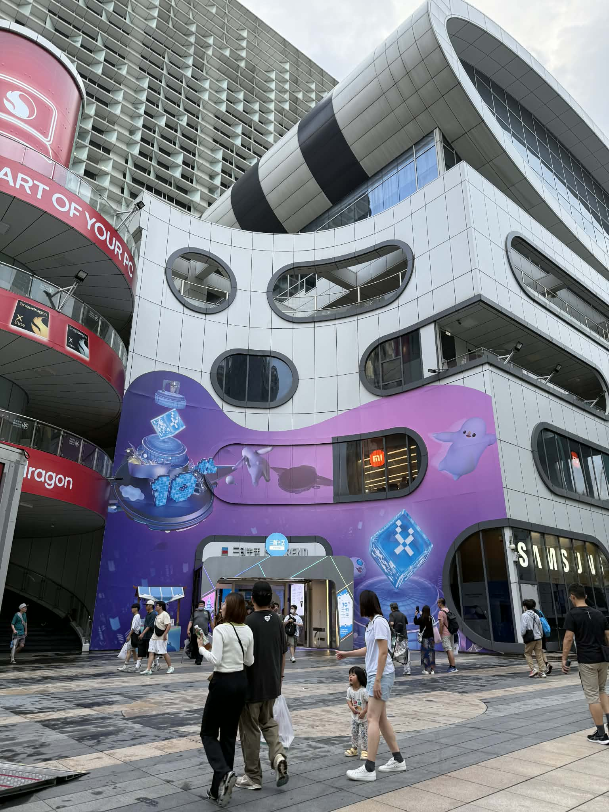
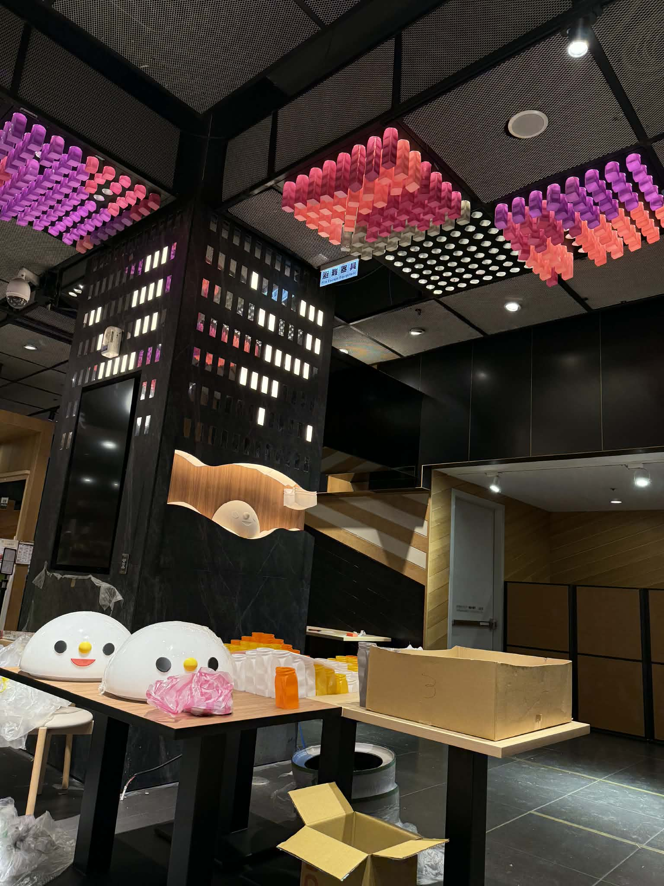
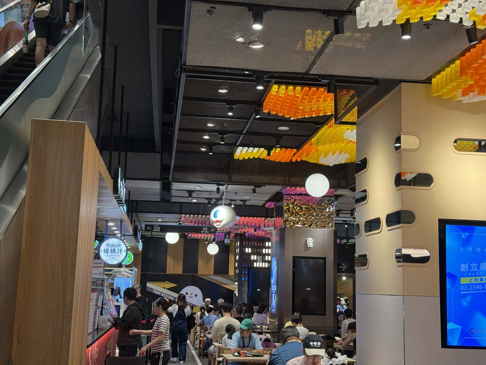
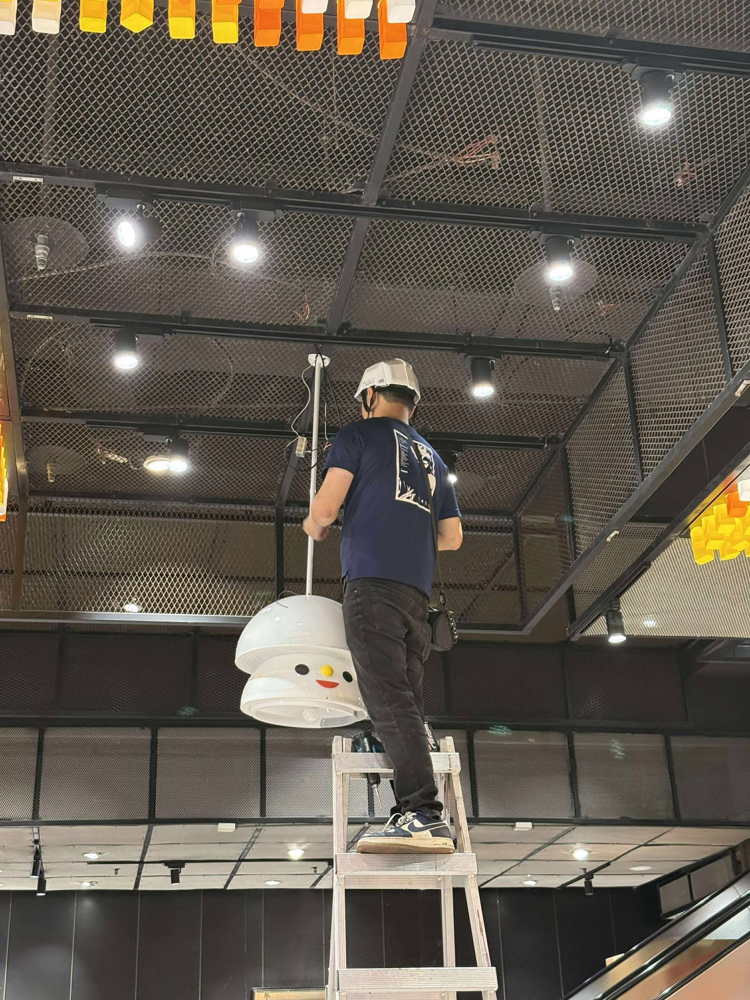
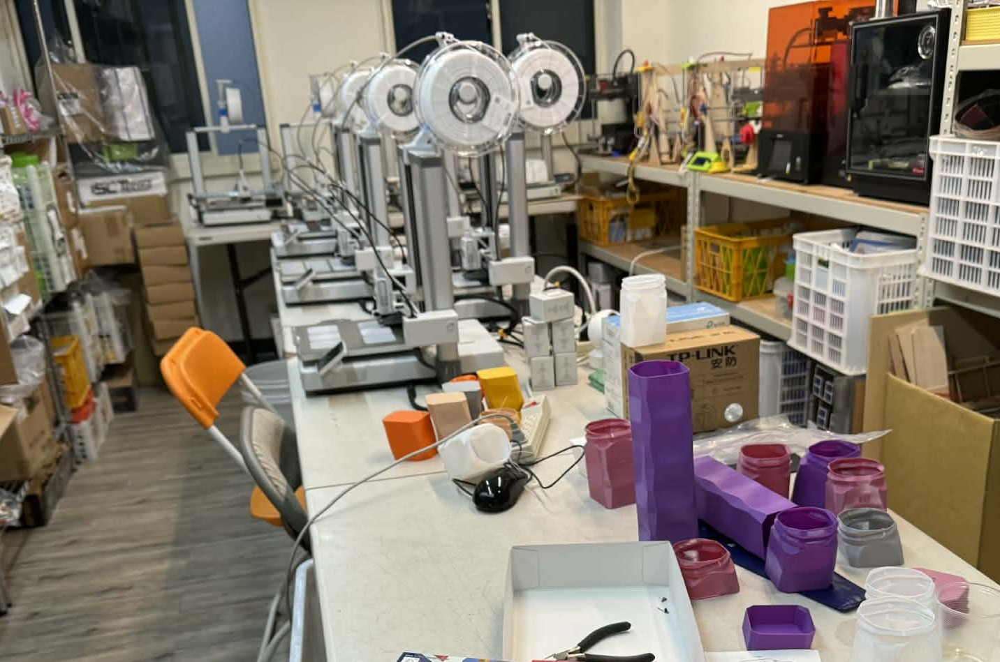
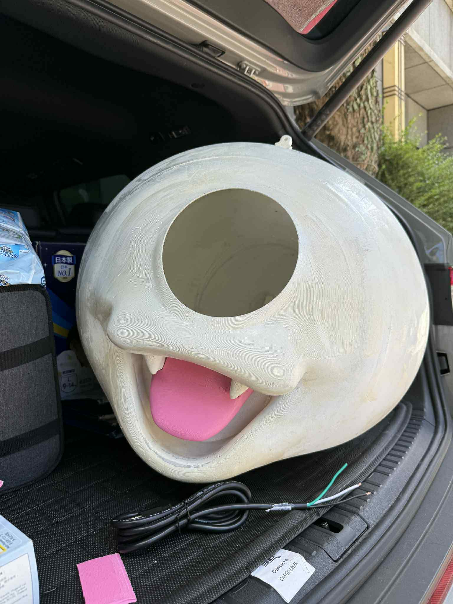

2025 — Taipei Syntrend Creative Park B1 Food Street Interior
Portfolio – Spatial Design / Digital Fabrication
Responsible for the overall style planning of the B1 food street, including ceiling decorative structures, signage, and ornaments. The ceiling structure consists of over 2,000 custom 3D-printed cylindrical elements arranged in a high-density array, creating a striking visual effect. The central columns and selected decorative features were also produced using FDM 3D printing, followed by post-processing to achieve a surface quality comparable to traditional fiberglass fabrication. Complete design drawings were provided for on-site installation by the construction team.
Tech
FDM 3D Printing, Surface Finishing
Design & Production Location: Taiwan
Material:
3D Printed Parts – PETG
Date: 2025






